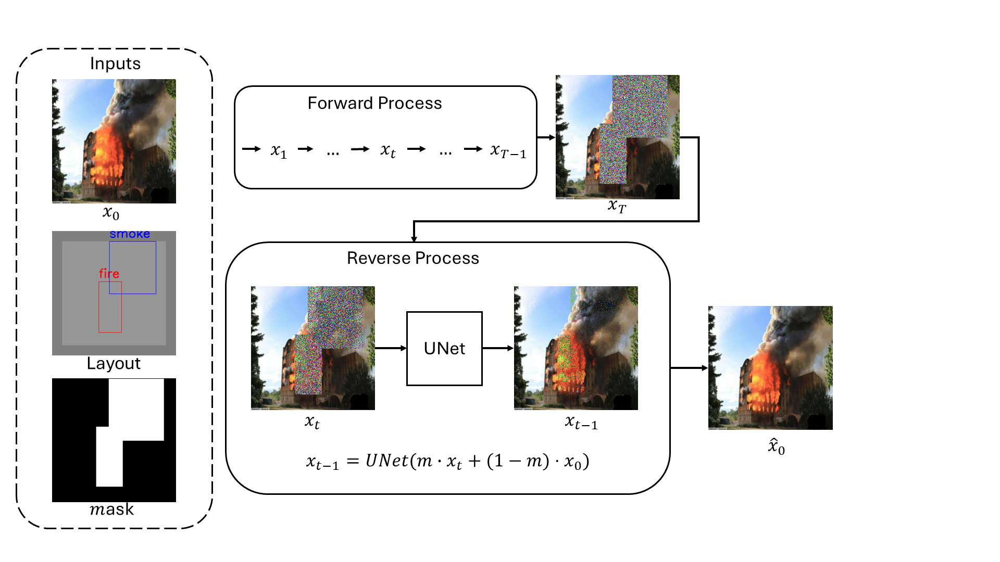
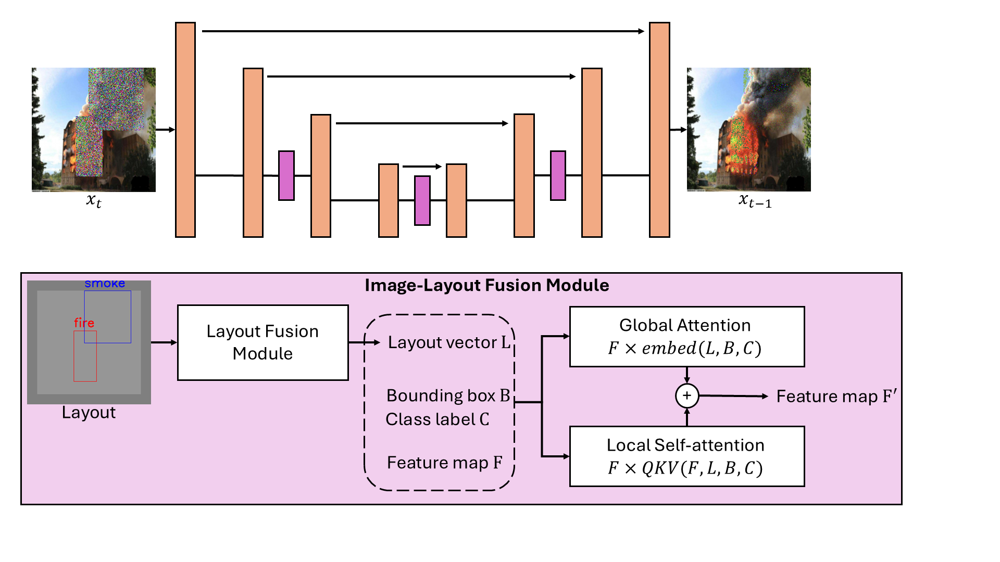
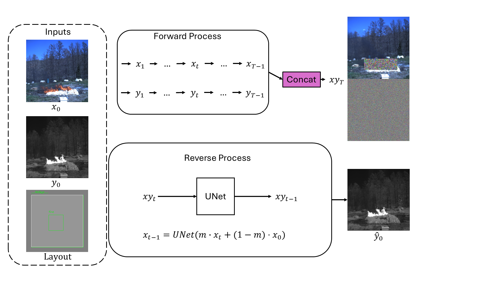
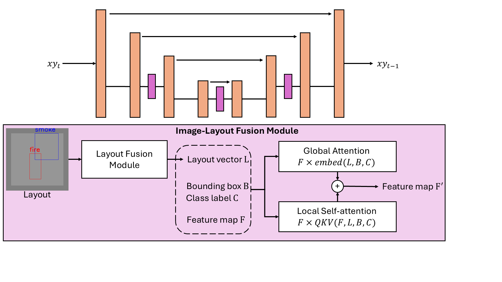
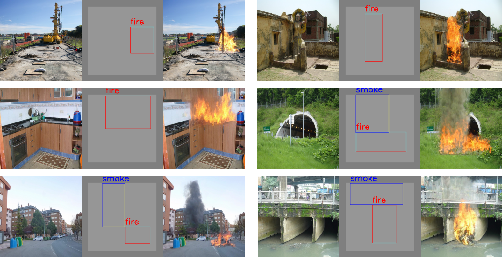
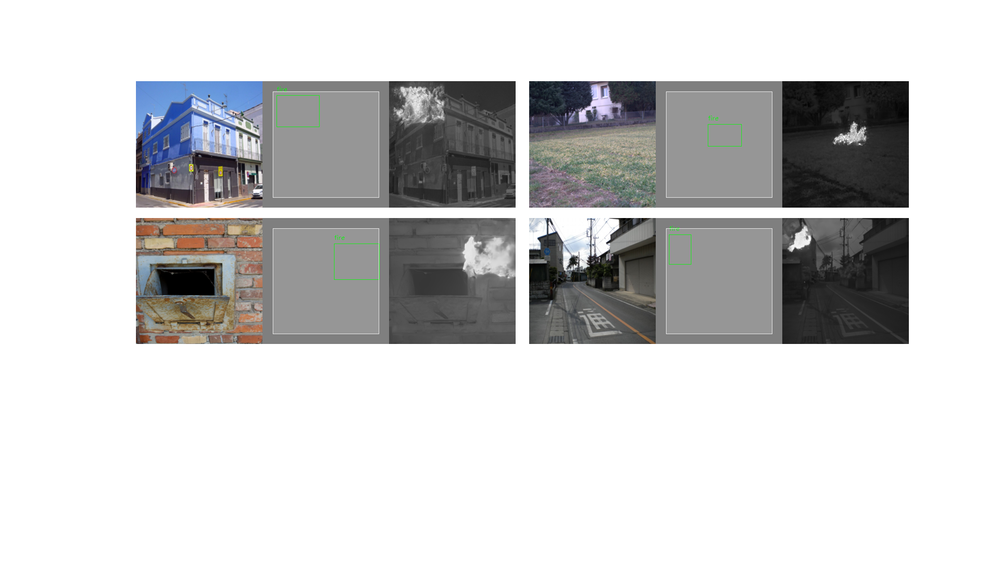

ACADEMIC · IVPG LAB, SEJONG UNIVERSITY
Diffusion-based Layout-Conditioned Multi-Spectral Fire Synthesis
Architecture
Given a real background photo, a layout (bounding boxes labeled “fire” / “smoke”), and a binary mask of that layout region, the model diffuses noise into the masked region only. At every reverse step, the denoised patch is blended back into the untouched original image outside the mask (xt-1 = UNet(m·xt + (1−m)·x0)), so the rest of the scene stays pixel-identical to the real photo — only the specified region is synthesized.

Layout conditioning happens inside an Image-Layout Fusion Module at each UNet resolution: the layout (bounding box, class label) is embedded into a layout vector, which steers the feature map through two parallel paths — global attention (broadcasting the layout embedding across the whole feature map) and local self-attention (a QKV attention restricted to the region and class) — summed into a layout-aware feature map that feeds the next UNet stage.

Extending to RGB + NIR: to keep a visible-light (RGB) and thermal/near-infrared (NIR) rendering of the same fire physically consistent, both channels are diffused jointly — their noisy latents are concatenated (xyt) and denoised together by one shared UNet (with the same Image-Layout Fusion Module), so a single reverse process produces matching flame geometry in both modalities from one layout.


Full implementation: github.com/hxnghia99/Fire_Diffusion
Demo
RGB-only generation across varied real backgrounds — construction site, historic building, kitchen, road tunnel, city street, and river bridge:

Joint RGB+NIR generation — each example shows the background, layout, and the resulting NIR/thermal fire signature at the same location:

Performance
This is ongoing dissertation work, so results so far are qualitative rather than a published benchmark. The model consistently localizes fire/smoke to the specified layout region while leaving every pixel outside the mask identical to the original photo — a guarantee that full-image generative baselines (which regenerate the whole frame) can't give. The RGB+NIR extension is, to date, the only variant in this line of work producing a synchronized thermal channel for the same generated event, which is what makes it useful for training multi-spectral fire detectors. Quantitative evaluation (FID, and downstream detection/segmentation gains, mirroring the GAN-based project's evaluation) is in progress.
Evidence
Code and configs are in the project repository:
- hxnghia99/Fire_Diffusion — full repository (
layout_diffusion/,configs/,scripts/,train.py,test.py)
This work is the subject of the ongoing PhD dissertation, “Generative Frameworks for Layout-Conditioned RGB and Multi-Spectral Fire Image Synthesis to Enhance Detection and Segmentation Tasks” (see Education section).